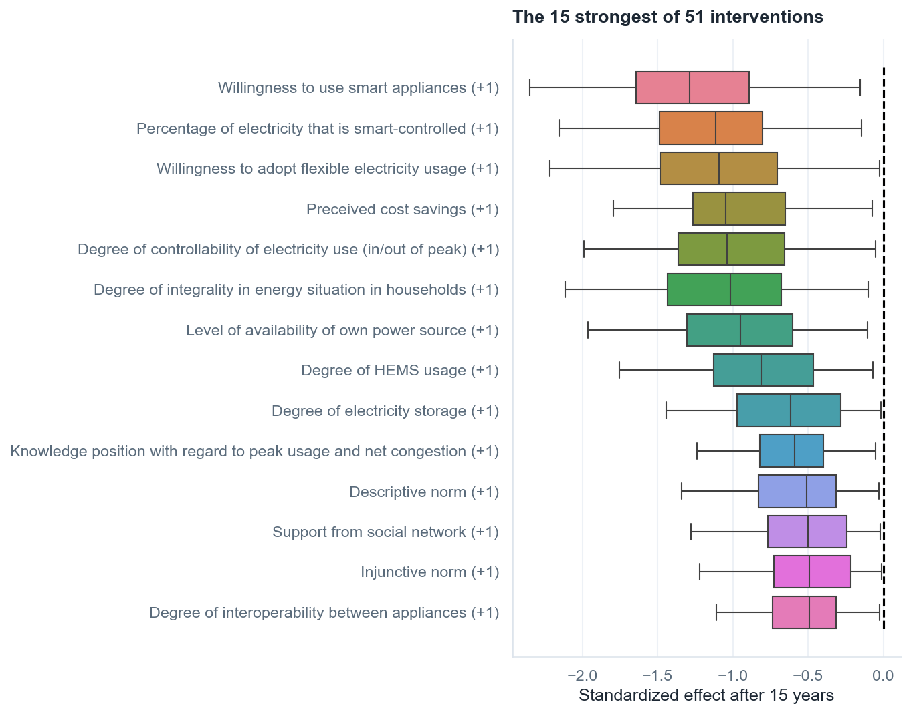
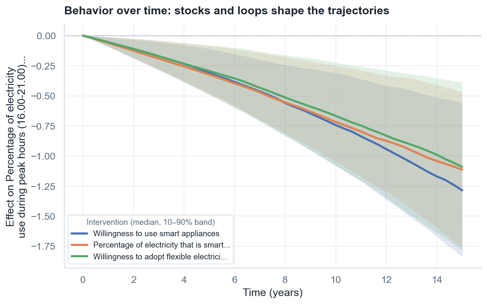
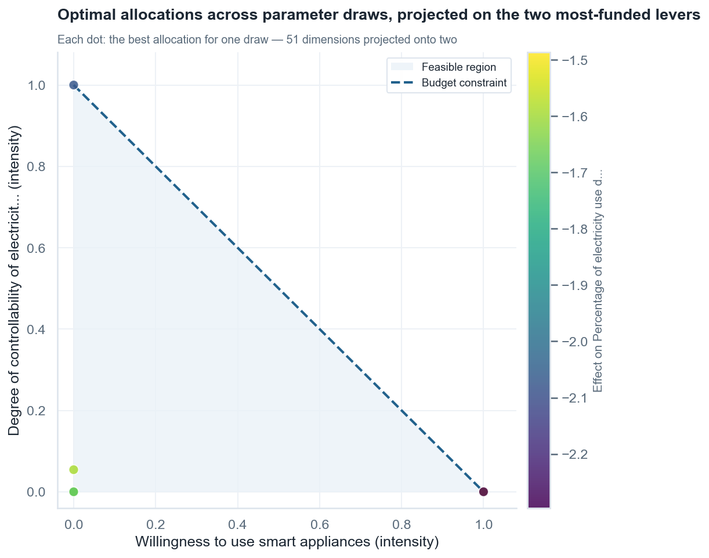
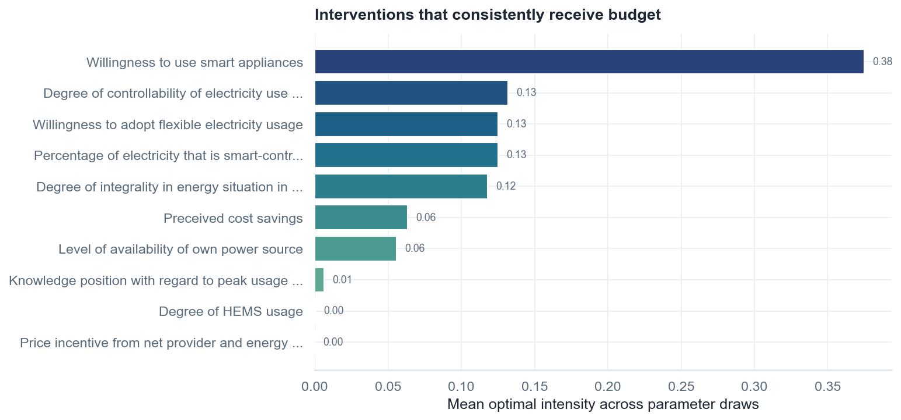
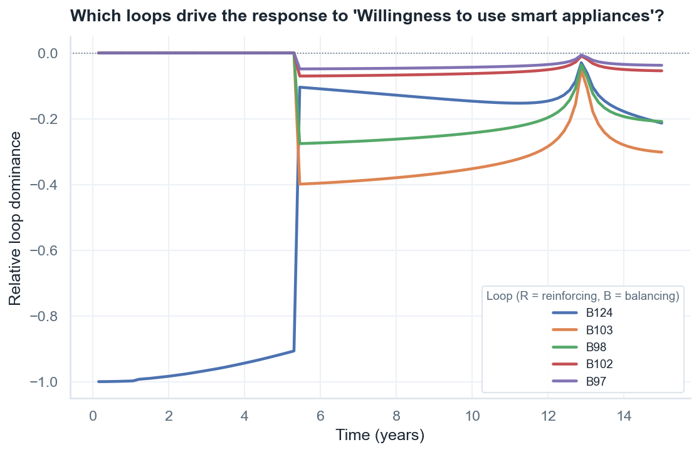

1Draw the causal loop diagram
This diagram was not drawn by one modeler at a desk: it came out of participatory sessions in which stakeholders mapped, together, what drives household electricity use during peak hours (16.00–21.00). Sessions like these typically happen on a whiteboard or directly in Kumu; the result is 57 variables connected by 94 causal links. Below is a faithful excerpt around the outcome — five real variables from the full map:
2Decide what you want from the model
A participatory map contains dozens of interesting variables; the analysis sharpens once the group commits to two explicit choices:
Which variables do you want to see vary? Here, one variable of interest (VOI): the percentage of electricity used during peak hours at the household level. Everything — rankings, sensitivity, optimization — is computed against it. Note the goal direction now: this is an outcome we want to lower.
Which variables could you act on? In this model 51 of the 57 variables are treated as candidate levers — in a participatory setting it is often right to include everything plausibly actionable and let the analysis sort out which matter. Only genuinely non-actionable context ("Regional context") is excluded.
3Choose the timeframe and the time unit
Both anchored to the VOI chosen in step 2:
The time unit is the timescale at which you want to be able to see the VOI vary. Household peak-hour consumption shifts as habits, technology, and tariffs evolve — change you would notice year over year, not day to day. Time unit: years.
The timeframe is the horizon of the question. This model informs energy-transition policy, so interventions get 15 years to prove themselves.
4Classify every variable: stock, auxiliary, or constant
With the timeframe (15 years) and time unit (years) fixed, classify each of the 57 variables by how fast it changes:
Varies more slowly than the timeframe? → constant.
"Availability of means to invest in new technology" or "Regional context" won't move appreciably
within 15 years on their own; they are fixed (but intervenable) conditions.
Adjusts to its drivers faster than the time unit? → auxiliary.
Something that re-equilibrates within a year whenever its drivers change — "(almost) instantly"
always means relative to the time unit.
In between? → stock. It accumulates and has memory:
"Percentage of electricity that is smart-controlled" (households adopt gradually and don't
un-adopt overnight), trust, knowledge, sense of responsibility — all build up over multiple years.
This model ends up with 31 stocks and 26 constants. The classification is the
single annotation that most changes the dynamics: the stocks are what make the time courses of
step 7 bend and saturate instead of jumping flat like the
stock-less minimal model. Capitalization doesn't matter
(Stock = stock), and untyped variables default to stock if they have
incoming arrows, constant otherwise — but classify deliberately with the rule above.
5Fill the spreadsheet
Kumu's Excel export carries the whole map; steps 2–4 fill in the annotation columns. Real
excerpts of Insulation_PeakEnergy.xlsx:
Elements — 57 rows, one per variable (excerpt):
| Label | Type | Tags | Description |
|---|---|---|---|
| Percentage of electricity that is smart-controlled | Stock | 1 | |
| Availability of means to invest in new technology | Constant | 1 | |
| Degree of personal sense of responsibility | Stock | 1 | |
| Regional context | Constant | 0 | |
| Percentage of electricity use during peak hours (16.00-21.00) on household level | Stock | 1 | VOI |
Type— the step-4 classification.Description—VOImarks the outcome from step 2.Tags— nonzero marks a lever from step 2 (the value is the intervention strength, its sign the direction).
Connections — 94 rows, one per arrow (excerpt: arrows into and out of the outcome):
| From | Type | To |
|---|---|---|
| Percentage of electricity that is smart-controlled | − | Percentage of electricity use during peak hours … |
| Degree of controllability of electricity use (in/out of peak) | − | Percentage of electricity use during peak hours … |
| Willingness to adopt flexible electricity usage | − | Percentage of electricity use during peak hours … |
| Perceived cost savings | − | Percentage of electricity use during peak hours … |
| Percentage of electricity use during peak hours … | + | Perceived cost savings |
The remaining knobs are five lines of Python — the step-3 choices plus how thoroughly to sample the uncertainty:
from sip_systemsinsightpipeline import Extract, SDM
s = Extract("Insulation_PeakEnergy.xlsx").extract_settings()
s.seed = 1912884
s.N = 200 # parameter samples (more = smoother, slower)
s.t_end = 15 # timeframe (step 3)
s.time_unit = "years" # time unit (step 3)
s.parameter_value_aux = 0.3 # perceptions/norms can react within ~3 years (1/0.3)
s.parameter_value_stocks = 0.1 # adoption/trust accumulate over ~10 years (1/0.1)
sdm = SDM(s)[0, bound] per year (with
the arrow's polarity sign). The two bounds encode a substantive assumption consistent with the
step-4 classification: fast-reacting auxiliary-like processes (bound 0.3 → ~3-year timescales)
versus slowly accumulating stocks (bound 0.1 → ~10-year timescales). If results are implausibly
explosive, the bounds are too high for the timeframe; if every trajectory is nearly flat, too
low. There is no time step to choose: the integrator (LSODA) adapts internally;
sdm.t_eval = np.linspace(0, s.t_end, 46) only sets where the solution is
recorded.
6Advanced: annotate the formulas (the Equation column)
value = Σ coeffᵢ · sourceᵢ; for a
stock, the same sum is its rate of change (so influences accumulate). This entire model
runs on the default — the honest choice for a participatory map where only the signs of
effects were elicited.Default intervention entry: with no
$ specified, an intervention
shifts a constant's value, a stock's initial condition, and is added to the
result of an auxiliary's (custom or default) equation.
When domain knowledge supports more structure, add an Equation column to the
Elements sheet:
| Notation | Meaning |
|---|---|
| variable names | exactly as written in the model (long names are fine) |
#1, #2, … | free parameters, each sampled uniformly from [0, parameter_value_aux] |
$ | where the intervention enters; if omitted, the defaults above apply |
np.exp, np.tanh, np.sqrt, sigmoid, … | numpy functions for nonlinear shapes |
For example, perceived cost savings plausibly saturate — doubling an already-large price difference does not double the perception. On the row for "Perceived cost savings" you could write:
#1 * np.tanh(#2 * Average price difference between peak and non-peak + 0.1*#3 * Percentage of electricity use during peak hours (16.00-21.00) on household level)# parameters share one sampling range, [0, parameter_value_aux].
Multiplying by a constant rescales it per term: in the example above, 0.1*#3 makes
the peak-use feedback effect up to ten times weaker than the price-difference effect — encoding
"price drives this perception; own usage plays a minor role" without fixing exact numbers. Use
10*#1 to widen a range, -#1 for a coefficient known to be negative.
SIP validates every equation against the diagram and warns about variables used without an incoming arrow or arrows the equation ignores — with 94 links, that validation is what keeps the spreadsheet and the formulas honest. The minimal twin dissects a worked equation (a synergy between two levers) end-to-end.
7Simulate, and read each graph carefully
df_sol_per_sample, param_samples = sdm.run_simulations()
effects = sdm.get_intervention_effects()
voi = s.variable_of_interest[0]
from sip_systemsinsightpipeline.plots import plot_simulated_intervention_ranking
plot_simulated_intervention_ranking(s, effects[voi], voi, top_plot=15)7.1 — The intervention ranking

7.2 — Behavior over time

7.3 — Sensitivity analysis: which assumptions matter?
top = list(effects[voi].keys())[0]
SA_results, df_SA = sdm.run_SA(voi, top, cut_off_SA_importance=0.15, n_bootstraps=100)+--------------------------------------------------------------------------------------------------------------------------------------+-------+--------------------+------------------+----------------+ | Link | Rho | 95% CI (bootstrap) | Mean Rho per Int | SD Rho per Int | +--------------------------------------------------------------------------------------------------------------------------------------+-------+--------------------+------------------+----------------+ | Willingness to use smart appliances->Percentage of electricity use during peak hours (16.00-21.00) on household level | -0.69 | [-0.75, -0.63] | -0.69 | 0.0 | | Willingness to use smart appliances->Percentage of electricity that is smart-controlled | 0.41 | [0.3, 0.52] | 0.41 | 0.0 | | Percentage of electricity that is smart-controlled->Percentage of electricity use during peak hours (16.00-21.00) on household level | -0.41 | [-0.54, -0.3] | -0.41 | 0.0 | | Percentage of electricity use during peak hours (16.00-21.00) on household level->Preceived cost savings | -0.18 | [-0.31, -0.03] | -0.18 | 0.0 | | Availability of means to invest in new technology->Willingness to use smart appliances | 0.15 | [0.03, 0.25] | 0.15 | 0.0 | | Degree of trust in government institutes->Degree of susceptibility | 0.15 | [-0.0, 0.27] | 0.15 | 0.0 | +--------------------------------------------------------------------------------------------------------------------------------------+-------+--------------------+------------------+----------------+
source->target); Rho is the rank
correlation between that link's sampled strength and the intervention's effect on peak-hour use.
In a 94-link model, this table is your research agenda: the handful of links with |Rho| above the
cutoff are where better evidence — a measurement, a literature estimate, a stakeholder workshop —
would most reduce the uncertainty you saw in the box widths of step 7.1. Links with positive Rho
amplify the intervention as they strengthen; negative Rho links dampen it.
8Optimize a budget — and read the allocation plots
With 51 levers, "which single intervention is best?" is the wrong question — real programs fund
portfolios. The optimizer splits a budget across all levers at once, in expenditure space
(yi = costi × intensityi, y ≥ 0,
Σy ≤ budget), and besides the best split reports near-optimal alternatives
within 5% of the best effect. One crucial flag: since the goal is to lower peak-hour use,
we set maximize=False:
from sip_systemsinsightpipeline import SDMOptimizer
params = sdm.sample_model_parameters()
costs = [1.0] * len(s.intervention_variables) # refine with real unit costs when known
optimizer = SDMOptimizer(sdm)
result = optimizer.optimize_intervention_intensities(
params=params, costs=costs, variable_of_interest=voi,
budget=1.0, maximize=False, n_starts=8, seed=1)Success: True Best effect size: -1.4542 Near-optimal allocations found: 8 Top 10 expenditures in the best allocation: 0.422 Degree of integrality in energy situation in households 0.363 Percentage of electricity that is smart-controlled 0.116 Willingness to use smart appliances 0.099 Knowledge position with regard to peak usage and net congestion 0.000 Percentage of electricity usage that is manually directed 0.000 Average cost of energy storage 0.000 Degree of trust in unsupervised use of appliances 0.000 Availability of means to invest in new technology 0.000 Degree of personal sense of responsibility 0.000 Degree of controllability of electricity use (in/out of peak)
8.1 — The allocation scatter: optimization under uncertainty
Re-optimizing for multiple parameter draws and plotting each draw's best allocation in the plane of the two interventions that receive the most budget:
opt_df = optimizer.optimize_across_parameter_samples(
costs=costs, variable_of_interest=voi, maximize=False,
n_parameter_samples=8, n_starts=4, seed=1)
best_per_draw = opt_df[opt_df.equilibrium_idx == 0]

9Feedback loops: Loops That Matter
The diagram contains 21 feedback loops. The Loops That Matter method (Schoenberg–Davidsen–Eberlein) scores, at every time point, how much each loop contributes to the model's behavior — turning "the system is complex" into "these two loops run the show":
from sip_systemsinsightpipeline import LoopsThatMatter
ltm = LoopsThatMatter(sdm)
ltm.print_loops()
# LTM scores the dynamics of a simulation run; without an intervention this
# model's baseline stays at zero, so analyze the response to the strongest lever
df_sol_ltm, link_scores, loop_scores = ltm.run_ltm_analysis(
params, n_points=100, intervention_intensities=1.0,
intervention_variable=top)Identified 300 feedback loops: B1 (Balancing): Perception of flexibility in daily routines → Willingness to adopt flexible electricity usage → Percentage of electricity that is smart-controlled → Degree of controllability of electricity use (in/out of peak) → Percentage of electricity use during peak hours (16.00-21.00) on household level → Preceived cost savings → Perception of urgency → Perception of flexibility in daily routines B2 (Balancing): Perception of flexibility in daily routines → Willingness to adopt flexible electricity usage → Percentage of electricity that is smart-controlled → Degree of controllability of electricity use (in/out of peak) → Percentage of electricity use during peak hours (16.00-21.00) on household level → Preceived cost savings → Injunctive norm → Support from social network → Knowledge position with regard to peak usage and net congestion → Perception of urgency → Perception of flexibility in daily routines B3 (Balancing): Perception of flexibility in daily routines → Willingness to adopt flexible electricity usage → Percentage of electricity that is smart-controlled → Degree of controllability of electricity use (in/out of peak) → Percentage of electricity use during peak hours (16.00-21.00) on household level → Degree of attention for peak usage / net congestion in media/policy → Injunctive norm → Support from social network → Knowledge position with regard to peak usage and net congestion → Perception of urgency → Perception of flexibility in daily routines B4 (Balancing): Perception of flexibility in daily routines → Willingness to adopt flexible electricity usage → Percentage of electricity that is smart-controlled → Percentage of electricity use during peak hours (16.00-21.00) on household level → Preceived cost savings → Perception of urgency → Perception of flexibility in daily routines B5 (Balancing): Perception of flexibility in daily routines → Willingness to adopt flexible electricity usage → Percentage of electricity that is smart-controlled → Percentage of electricity use during peak hours (16.00-21.00) on household level → Preceived cost savings → Injunctive norm → Support from social network → Knowledge position with regard to peak usage and net congestion → Perception of urgency → Perception of flexibility in daily routines B6 (Balancing): Perception of flexibility in daily routines → Willingness to adopt flexible electricity usage → Percentage of electricity that is smart-controlled → Percentage of electricity use during peak hours (16.00-21.00) on household level → Degree of attention for peak usage / net congestion in media/policy → Injunctive norm → Support from social network → Knowledge position with regard to peak usage and net congestion → Perception of urgency → Perception of flexibility in daily routines R1 (Reinforcing): Perception of flexibility in daily routines → Willingness to adopt flexible electricity usage → Percentage of electricity that is smart-controlled → Degree of comfort and ease → Percentage of electricity usage that is manually directed → Degree of controllability of electricity use (in/out of peak) → Percentage of electricity use during peak hours (16.00-21.00) on household level → Preceived cost savings → Perception of urgency → Perception of flexibility in daily routines R2 (Reinforcing): Perception of flexibility in daily routines → Willingness to adopt flexible electricity usage → Percentage of electricity that is smart-controlled → Degree of comfort and ease → Percentage of electricity usage that is manually directed → Degree of controllability of electricity use (in/out of peak) → Percentage of electricity use during peak hours (16.00-21.00) on household level → Preceived cost savings → Injunctive norm → Support from social network → Knowledge position with regard to peak usage and net congestion → Perception of urgency → Perception of flexibility in daily routines R3 (Reinforcing): Perception of flexibility in daily routines → Willingness to adopt flexible electricity usage → Percentage of electricity that is smart-controlled → Degree of comfort and ease → Percentage of electricity usage that is manually directed → Degree of controllability of electricity use (in/out of peak) → Percentage of electricity use during peak hours (16.00-21.00) on household level → Degree of attention for peak usage / net congestion in media/policy → Injunctive norm → Support from social network → Knowledge position with regard to peak usage and net congestion → Perception of urgency → Perception of flexibility in daily routines R4 (Reinforcing): Perception of flexibility in daily routines → Willingness to adopt flexible electricity usage → Percentage of electricity that is smart-controlled → Degree of visibility of electricity usage → Descriptive norm → Support from social network → Knowledge position with regard to peak usage and net congestion → Perceived agency in shifting electricity usage → Percentage of electricity usage that is manually directed → Degree of controllability of electricity use (in/out of peak) → Percentage of electricity use during peak hours (16.00-21.00) on household level → Preceived cost savings → Perception of urgency → Perception of flexibility in daily routines B7 (Balancing): Perception of flexibility in daily routines → Willingness to adopt flexible electricity usage → Percentage of electricity that is smart-controlled → Degree of visibility of electricity usage → Descriptive norm → Support from social network → Knowledge position with regard to peak usage and net congestion → Perception of urgency → Perception of flexibility in daily routines R5 (Reinforcing): Perception of flexibility in daily routines → Willingness to adopt flexible electricity usage → Percentage of electricity that is smart-controlled → Degree of visibility of electricity usage → Descriptive norm → Support from social network → Knowledge position with regard to peak usage and net congestion → Degree of integrality in energy situation in households → Percentage of electricity use during peak hours (16.00-21.00) on household level → Preceived cost savings → Perception of urgency → Perception of flexibility in daily routines R6 (Reinforcing): Perception of flexibility in daily routines → Willingness to adopt flexible electricity usage → Percentage of electricity that is smart-controlled → Degree of visibility of electricity usage → Descriptive norm → Support from social network → Knowledge position with regard to peak usage and net congestion → Degree of integrality in energy situation in households → Willingness to use smart appliances → Percentage of electricity use during peak hours (16.00-21.00) on household level → Preceived cost savings → Perception of urgency → Perception of flexibility in daily routines B8 (Balancing): Perception of flexibility in daily routines → Willingness to adopt flexible electricity usage → Percentage of electricity that is smart-controlled → Degree of visibility of electricity usage → Descriptive norm → Perception of flexibility in daily routines R7 (Reinforcing): Perception of flexibility in daily routines → Willingness to adopt flexible electricity usage → Percentage of electricity that is smart-controlled → Degree of visibility of electricity usage → Injunctive norm → Support from social network → Knowledge position with regard to peak usage and net congestion → Perceived agency in shifting electricity usage → Percentage of electricity usage that is manually directed → Degree of controllability of electricity use (in/out of peak) → Percentage of electricity use during peak hours (16.00-21.00) on household level → Preceived cost savings → Perception of urgency → Perception of flexibility in daily routines ... (285 more lines; run ltm.print_loops() for the full list)

10Checklist
| Step | Where | |
|---|---|---|
| 1 | Map variables, arrows, polarities — ideally with stakeholders, in Kumu; export to Excel | workshop → Kumu |
| 2 | Decide the variables of interest and the intervention variables | reflection |
| 3 | Choose the time unit (speed at which VOIs should visibly vary) and the timeframe | reflection |
| 4 | Classify: slower than timeframe → constant; faster than time unit → auxiliary; in between → stock | rule of thumb |
| 5 | Fill Elements / Connections; set Type, VOI, Tags; set timeframe and sampling bounds in 5 lines of Python | Excel + Python |
| 6 | Optional: custom equations (#, $, range-scaling trick); know the defaults | Excel |
| 7 | Simulate; read ranking, time courses, sensitivity analysis | Python |
| 8 | Optimize the budget (mind maximize=!); read the allocation plots | Python |
| 9 | Check which feedback loops drive the behavior | Python |